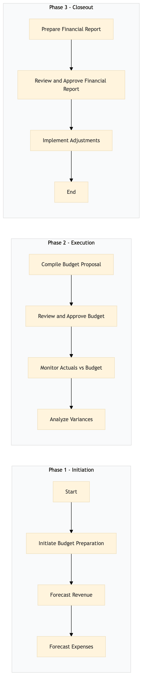

| Role | Steps |
|---|---|
| Finance Manager | 1.1 1.3 2.1 2.3 2.4 3.1 3.3 |
| Revenue Manager | 1.2 2.2 |
| General Manager | 2.2 3.2 |
| Finance Director | 2.2 3.2 |
| Step | Name | Role | System | Input | Output | KPI | Dec? | Exc? | Pain Point / Risk |
|---|---|---|---|---|---|---|---|---|---|
| 1.1 | Initiate Budget Preparation | Finance Manager | Oracle OPERA Cloud | Previous year's budget and actuals, market trends data | Budget preparation plan | Less than 2 days to initiate | N | Y | Data accuracy and completeness from Oracle OPERA Cloud |
| 1.2 | Forecast Revenue | Revenue Manager | IDeaS G3 RMS | Historical revenue data, occupancy rates, market trends | Revenue forecast report | Less than 1 week to complete | N | Y | Accurate forecasting based on varying market conditions |
| 1.3 | Forecast Expenses | Finance Manager | Oracle OPERA Cloud, SAP S/4HANA | Historical expense data, budget guidelines, vendor contracts | Expense forecast report | Less than 1 week to complete | N | Y | Integrating multiple systems for accurate forecasting |
| 2.1 | Compile Budget Proposal | Finance Manager | Microsoft Power BI, Oracle OPERA Cloud | Revenue and expense forecasts, budget guidelines | Budget proposal document | Less than 2 weeks to complete | N | Y | Balancing revenue expectations with cost control |
| 2.2 | Review and Approve Budget | General Manager, Finance Director | Microsoft Power BI, Oracle OPERA Cloud | Budget proposal document | Approved budget document | Less than 1 week to review and approve | Y | N | Aligning budget with strategic goals |
| 2.3 | Monitor Actuals vs Budget | Finance Manager | Oracle OPERA Cloud, SAP S/4HANA | Approved budget document, actual financial data | Variance analysis report | Daily monitoring and reporting | N | Y | Real-time data integration and accuracy |
| 2.4 | Analyze Variances | Finance Manager, Revenue Manager | Microsoft Power BI, Oracle OPERA Cloud | Variance analysis report | Variance analysis memo | Less than 1 week to analyze and document | N | Y | Identifying root causes of variances |
| 3.1 | Prepare Financial Report | Finance Manager | Microsoft Power BI, Oracle OPERA Cloud | Variance analysis memo, budget guidelines | Financial report document | Less than 2 weeks to prepare | N | Y | Comprehensive reporting with actionable insights |
| 3.2 | Review and Approve Financial Report | General Manager, Finance Director | Microsoft Power BI, Oracle OPERA Cloud | Financial report document | Approved financial report document | Less than 1 week to review and approve | Y | N | Aligning financial performance with strategic objectives |
| 3.3 | Implement Adjustments | General Manager, Finance Director | Oracle OPERA Cloud, SAP S/4HANA | Approved financial report document | Adjustment plan and implementation | Less than 1 month to implement adjustments | Y | N | Effective communication and coordination across departments |
The FN-AC-06 process involves preparing the annual budget and analyzing variances against actual financial performance at a Marriott full-service hotel. This ensures financial control and helps in strategic decision-making.